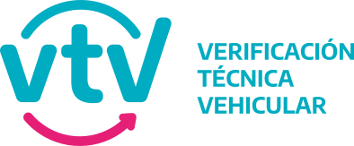

Transferencia tecnológica · Ingeniería aplicada
Desarrollamos electrónica, firmware y software a medida para la industria. Transformamos necesidades técnicas concretas en soluciones validadas, listas para ser industrializadas.
Qué hacemos
Un equipo multidisciplinario con infraestructura de laboratorio y experiencia en el ciclo completo de desarrollo.
Casos reales
Desarrollos completos transferidos a la industria: desde el diseño electrónico hasta la validación en campo.
Proyecto 01 · Control electrónico
Proyecto 02 · Instrumentación agrícola
Proyecto 03 · Agricultura de precisión
Proyecto 04 · Sistema de monitoreo óptico
Proyecto 05 · Adquisidor de datos
Proyecto 06 · Interrogador espectral
Nuestros clientes y referencias
Nuestros desarrollos son adoptados por empresas que necesitan tecnología robusta, validada y lista para producción.

Cómo trabajamos
Un proceso estructurado que minimiza el riesgo técnico y asegura que el resultado final sea industrializable.
Qué entregamos
No solo prototipos. Entregamos desarrollos documentados, transferibles y con soporte en el proceso de industrialización.
Iniciemos una consulta
Describa el desafío técnico a resolver. Realizaremos una evaluación inicial sin compromiso para determinar cómo podemos asistirle.